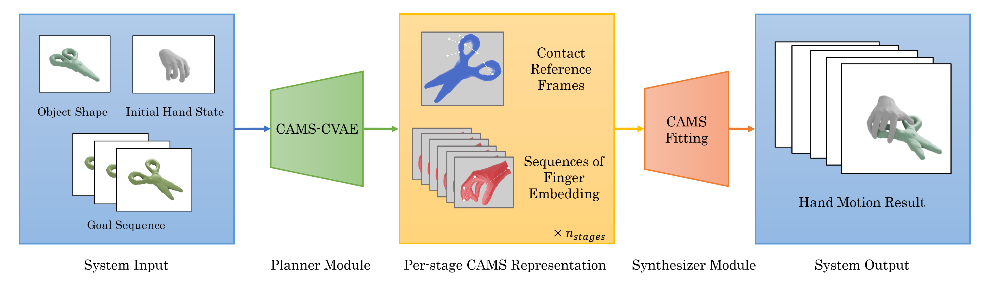

Our framework mainly consists of a CVAE-based planner module and an optimization-based synthesizer module. Given the generation condition as the input, the planner first generates a per-stage CAMS representation containing contact reference frames and sequences of finger embedding. Then the synthesizer optimizes the whole manipulation animation based on the CAMS embedding.
